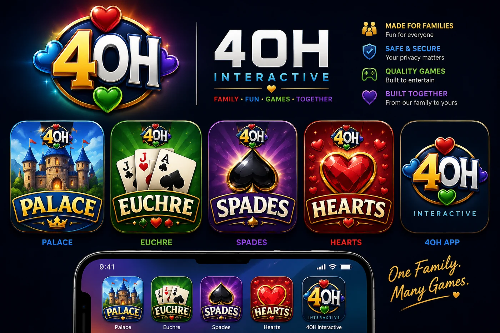

Four of Hearts newsroom
The table is taking shape.
Palace development leads the news, with honest updates from the wider Four of Hearts family. No invented launch dates, player counts, or partnerships.
Why We’re Building Palace
A familiar card-table game deserves a modern home that respects its mystery, momentum, and many table traditions.
Read featured story →Palace Enters Founder Testing
The flagship Four of Hearts experience is in hands-on internal testing, with attention on clarity, feel, and the full table journey.
Read story →
Welcome to Four of Hearts Interactive
Meet the South Dakota studio building Palace and a growing family of timeless card-table experiences.
Read story →
Meet the Four Games in the 4OH Family
Palace leads the table, with Hearts, Spades, and Euchre bringing three distinct kinds of strategy to the studio.
Read story →Building a Safer, Family-Friendly Card Table
How Four of Hearts approaches clear policies, restrained data use, accessibility, and honest Internal Alpha communication.
Read story →